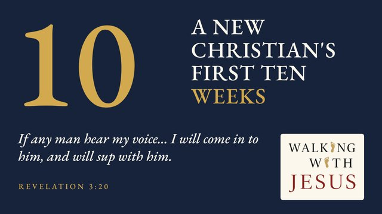

Make room for Jesus, on purpose.
The house swept clean
Jesus told a short story about a house:
"When the unclean spirit is gone out of a man, he walketh through dry places, seeking rest; and finding none, he saith, I will return unto my house whence I came out. And when he cometh, he findeth it swept and garnished. Then goeth he, and taketh to him seven other spirits more wicked than himself; and they enter in, and dwell there: and the last state of that man is worse than the first."Luke 11:24–26 (KJV)
The house was tidy, swept, even decorated. It was also empty. Nothing in it was wrong, and nothing in it was Christ.
When we begin to follow Jesus, we tend to think about what to clear out: the old habits, the old routines. His story suggests that clearing out isn't enough, because an empty house doesn't stay empty. What fills the space matters more.
So fill it on purpose, with Jesus.
Why Walking with Jesus?
How it works
- The four Gospels, woven into one story and read in order, in the King James Version.
- Pure scripture, with no commentary or devotional material, so you get the full force of Jesus' words and actions.
- Bring Jesus into the hour you're already living: the commute, the dishes, the walk.
Where to begin

A New Christian's First Ten WeeksA short daily listen through the Gospels, in the order the events happened.
Listen your way
Congratulations on taking this step.
Whether through this platform or another way, we encourage you to walk daily with Jesus so His words can truly shape your life. May God bless you as you bring His word into your heart.